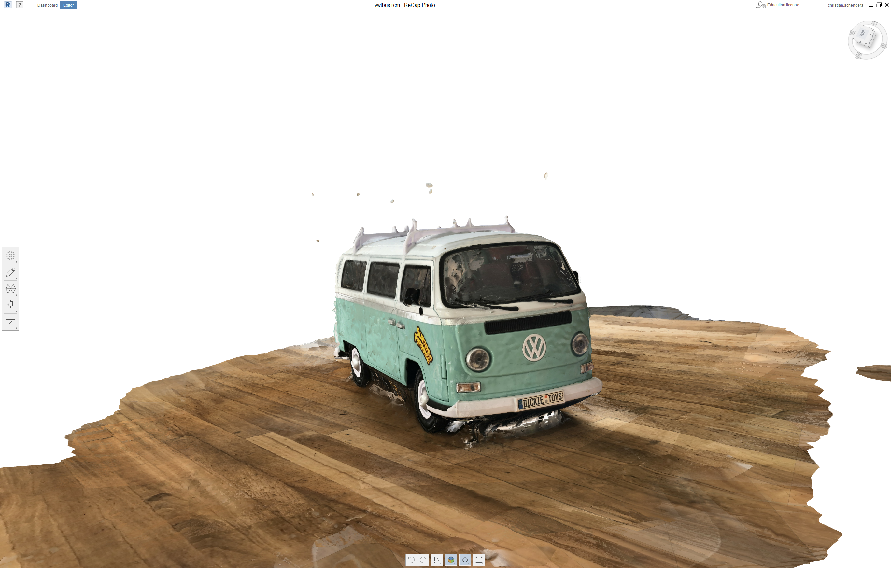
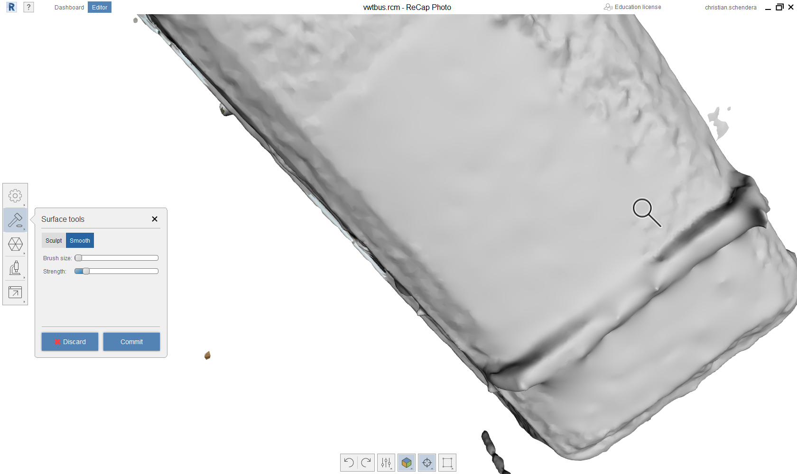

This weeks Assignment
|
Learning outcomes
|
Have you?
|
I needed a strainer for noodles and other stuff that has to be wasched (i.e.berries) and wanted to print it by my own.

hero shot 1 |

hero shot 2 |
I tried it also with cooked noodles. My fault is, that I used PLA instead of for example ABS
My product sadly melted under the hot water
For scanning at home I tried the Software Recap from Autodesk, with which I can make a 3-D model out of pictures.
Do pictures from every angle and the Program will assemble it to a 3D-Object
I started with a modle of an old Volkswagen T bus

I made 58 pictures |
and uploaded them to Recap |
and started the process |
|

This is the raw model |
I sliced the unnecessary parts |
so I only got the car |
|

I smoothed the buckles |
that is the result |
but in the skulping mode it still does not look that great |
|
I started a new try |
I also made more pictures (111) |
This is the result xD |
with more pictures, the result should get much better
But round objects seem to be a impossible to counstruct for the program, because it has no anker
Also it is really hard to get a proper result if you have a lot of details on your object